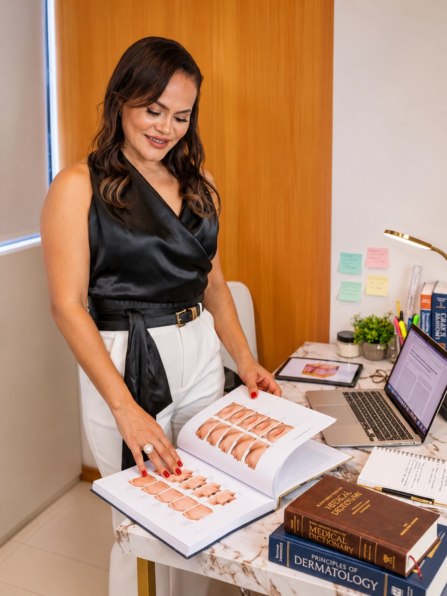

Estética facial
Microagulhamento, cuidados com a textura da pele e rejuvenescimento facial.
ESTÉTICA INTEGRATIVA · SALVADOR, BA
Cuidados faciais e corporais personalizados, com atenção à naturalidade, à autoestima e às particularidades da sua pele.
Agende sua avaliação ↗UM OLHAR INTEGRAL
Microagulhamento, cuidados com a textura da pele e rejuvenescimento facial.
Cuidados voltados à aparência de estrias, manchas e à qualidade da pele.
Conheça as indicações, limitações e cuidados da técnica em uma avaliação individual.
CONHEÇA A PROFISSIONAL
Biomédica esteta, analista clínica, administradora e palestrante. Atua na área da beleza e estética desde 1997, inicialmente na gestão e consultoria de clínicas e salões.
Com formação em Administração, uniu sua experiência em gestão à paixão pela estética. Também incentiva mulheres e profissionais da área por meio da educação e do compartilhamento de conhecimento.
Entre em contatoO CONSULTÓRIO
Um ambiente pensado para que você se sinta acolhida, confortável e à vontade. Cada detalhe convida a desacelerar e dedicar um momento ao seu bem-estar, com privacidade e atenção individualizada.
Edifício Metrô Empresarial · Sala 202
Rua das Pitangueiras, 204 – Matatu
Salvador – BA


EDUCAÇÃO · ESTÉTICA · EMPREENDEDORISMO
Além dos atendimentos estéticos, Marlisa Araújo compartilha conhecimento e experiência para incentivar o desenvolvimento de mulheres e profissionais da estética.
DÚVIDAS FREQUENTES
Esclareça suas principais dúvidas antes de agendar sua avaliação.
Entre em contato pelo Instagram para consultar a disponibilidade e combinar seu atendimento.
A indicação depende das características da sua pele, do seu histórico e dos seus objetivos. A avaliação individual orienta essa escolha.
É uma técnica que utiliza energia de plasma em aplicações específicas na pele. A indicação, os riscos e os cuidados devem ser avaliados individualmente.
Os cuidados variam conforme a técnica utilizada. Siga as orientações recebidas durante o atendimento.
Solicite informações diretamente à profissional. Os valores podem variar conforme o procedimento e o plano de atendimento.
RESERVE UM MOMENTO PARA VOCÊ
Converse com Marlisa Araújo, esclareça suas dúvidas e conheça as possibilidades de cuidado para a sua pele.
Agende sua avaliação ↗@dra.marlisaaraujo